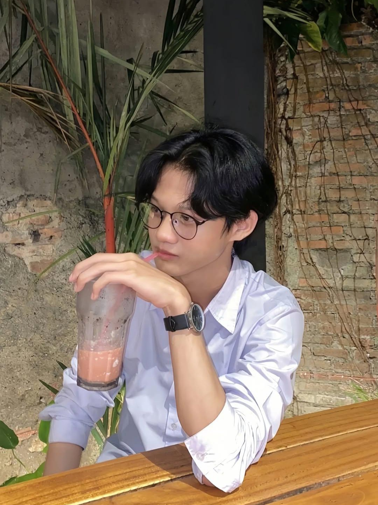

AGUSTUS — NOVEMBER 2025
WEB DEVELOPMENT
Web Developer
Cafe Love StoryMengembangkan sistem kasir dan landing page company profile untuk cafe dengan fokus pada alur kerja yang jelas dan kemudahan pengguna.
Junior Web Developer & Machine Learning Enthusiast

TENTANG SAYA
Saya merupakan fresh graduate lulusan S1 Teknik Informatika dengan IPK 3,67 dengan pengalaman mengerjakan 4+ proyek di bidang teknologi informasi, mulai dari pengembangan web hingga penerapan Machine Learning serta memiliki ketertarikan pada Web Development, Machine Learning, dan Desain Grafis. Saya aktif mengembangkan diri di bidang informatika, senang mempelajari teknologi baru, serta mengubah kebutuhan menjadi solusi digital yang fungsional dan sesuai kebutuhan pengguna.
Lebih jauh tentang saya ↗TOOLS
Teknologi yang saya gunakan untuk membangun, menganalisis, dan merancang solusi.
PROYEK PILIHAN
Beberapa karya yang merepresentasikan proses belajar dan eksplorasi saya di bidang web, aplikasi, dan data.
Analisis sentimen komentar Instagram Timnas Indonesia menggunakan TF-IDF dan Naive Bayes.
Aplikasi point-of-sale untuk membantu proses transaksi, laporan, dan pencatatan operasional cafe.
Platform reservasi kamar kost online dengan dashboard admin dan bukti reservasi PDF.
SERTIFIKAT
Sertifikat yang menjadi bagian dari perjalanan belajar saya.
PENGALAMAN & ORGANISASI
Pengalaman yang membentuk cara saya bekerja, belajar, berkolaborasi, dan menyelesaikan permasalahan.
AGUSTUS — NOVEMBER 2025
Mengembangkan sistem kasir dan landing page company profile untuk cafe dengan fokus pada alur kerja yang jelas dan kemudahan pengguna.
MARET — APRIL 2021
Melakukan perakitan perangkat dan memastikan kualitas produk sesuai dengan SOP perusahaan yang ditetapkan.
JUNI — JULI 2025
Mengelola kebutuhan logistik dan konsumsi untuk mendukung kelancaran kegiatan pengabdian kepada masyarakat.
HUBUNGI SAYA
Terbuka untuk diskusi tentang proyek baru dan peluang kerja sama
Hubungi Saya ↗